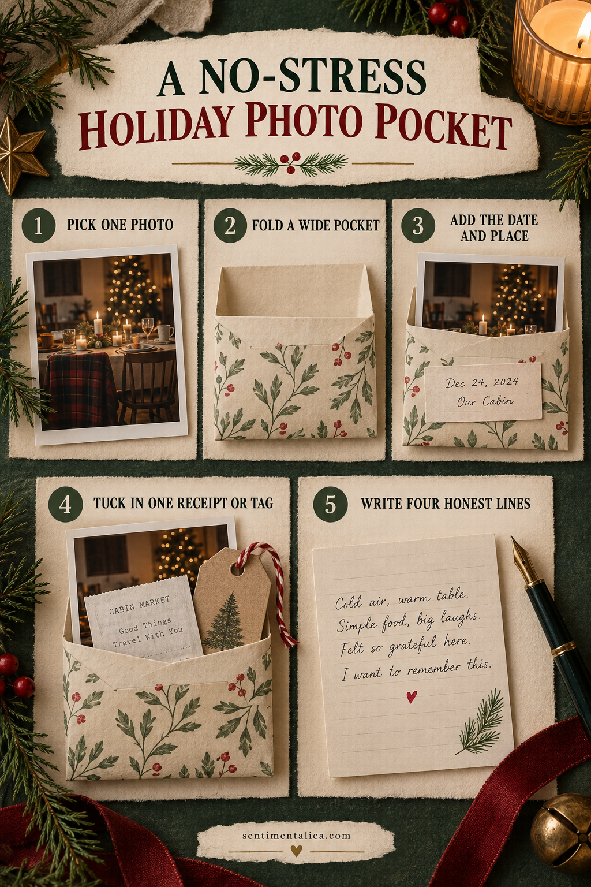
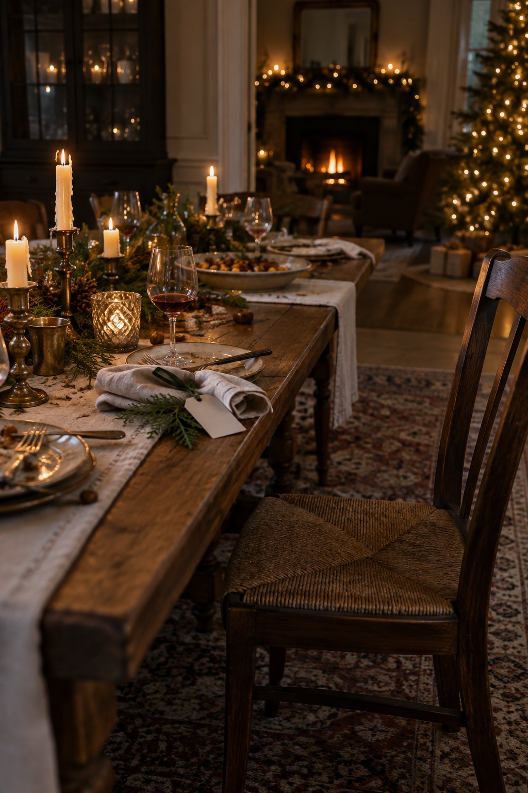

A holiday photo pocket gives extra pictures one clear home without asking you to design a complicated spread. This simple construction keeps the page useful, calm, and easy to finish.

Pick one photograph, not the whole camera roll
Choose the image that best holds the feeling of the gathering. It can show the table, doorway, tree, or people in motion. A technically imperfect photograph may carry the strongest memory.
Fold a wide, shallow pocket
Use medium-weight paper and allow a quarter-inch of ease around the photograph. Fold the bottom edge, glue the two sides, and keep the opening away from the journal spine.
Add the date and place
Write the city, home, or room and the full date on a small card. This simple context will matter later and prevents the page from relying on decorative holiday words.
Tuck in one real trace
Choose a gift tag, receipt, menu corner, recipe copy, or ribbon label. Keep only one or two flat pieces so the pocket remains easy to use.
Write four honest lines
Record what happened, one sensory detail, one thing someone said, and what you want to remember. Stop there. The pocket does not need to summarize the entire holiday.
Want a low-pressure page to practise with? Open the 100 free floral pictures, choose one image that matches your palette, and try the method before using a favorite original.

Let the page stay simple
Use a glue stick or a thin layer of paper adhesive, keep wet glue away from photographs, and allow folded pieces to dry before closing the journal. Flat paper traces are safer for the binding than thick natural objects or heavy charms.
When the page is finished, add the full date and one sentence only you could have written. That final detail turns a pretty arrangement into a memory.
Prepare a small, calming workspace
Clear only enough room for the open journal and one shallow tray. Put scissors, adhesive, pencil, and the chosen papers within reach, then move the larger supply boxes away. A limited workspace reduces repeated decisions and makes it easier to notice when the page is already complete.
If you feel rushed, do the construction first and the writing later. Keep the photograph or note in the unfinished pocket so nothing is lost. The page can wait until you have the quiet attention its story deserves. Close the supplies when you stop so returning feels easy.
Sort the photographs by purpose
Keep one photograph visible as the page anchor. Place supporting pictures in the pocket only when they add a different person, place, or moment. Near-duplicates can stay in your digital library; the pocket does not need to become a complete archive of the event.
Write a short index on the pocket back if it holds more than three photographs. Include names, place, and year, then number the photo backs lightly in pencil. This makes the collection understandable even if the pieces are separated later. Test the filled pocket before attaching it so the extra weight does not pull at the page.